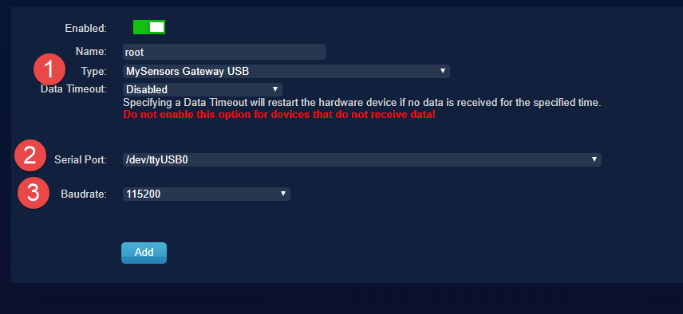
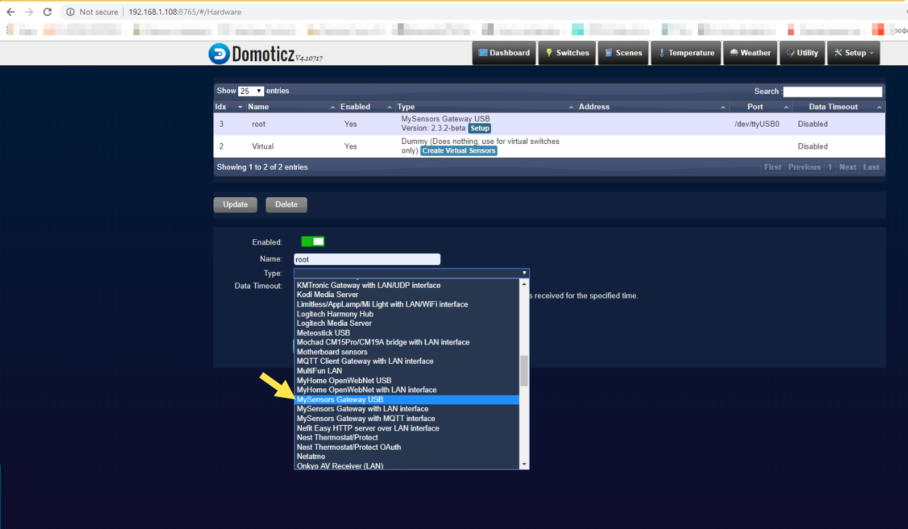

Connecting EasySwitch box to Domoticz home automation controller.

We have a deep admiration for the RFM LoRa radio and Arduino-compatible processors from Microchip, and here are a few reasons why:
- Easy to Learn: Learning to use this technology is a breeze. Thanks to the efforts of various lib authors such as Low Power Lab, Airspyce, and MySensors, the code is lightweight and easy to comprehend.
- Free Programming IDE: The fact that the programming IDE is free is a major advantage when compared to other technologies like Zigbee. For example, if you want to use the free ZHA stack from Texas Instruments, you need to purchase a costly IDE to compile code into binaries. With the open-source Arduino Software (IDE), you get a great tool that takes care of a lot of things for you.
- Great Libraries: We have tested many libraries, and the ones we used from MySensors have been a staple in our projects for years. They are incredibly useful for home automation projects.
Other things worth mentioning:
- The switchbox is powered by a coin cell battery, so it’s crucial to send the processor and radio into sleep mode to extend battery life. Otherwise, it may only last a few hours or less.
- it is important to consider the device’s power source, which is coin cell batteries. As such, the values for #define MY_RFM95_TX_POWER_DBM or #define MY_RFM69_TX_POWER_DBM should be selected carefully to avoid quick battery depletion.
- Air sanity is important when using radiofrequency. Please be cautious with retries and tests, and avoid taking too much airtime for sending packets, as the radiofrequency is free for all.
To link the EasySwitch box with the Domoticz home automation controller, For seamless connectivity with the home automation controller, it is recommended to use a serial gateway built on the NanoShield module
Arduino IDE Settings for EasySwitchBox

programming FTDI adapter connection

Mysensors is a community that provides open-source hardware and software solutions for DIY home automation and Internet of Things (IoT) projects. Their library set is specifically geared towards home automation and is designed to support both RFM69 and LoRa RFM95. You can easily define the radio type and frequencies by specifying them in the following lines.
#define MY_RADIO_RFM69
//#define MY_IS_RFM69HW
Or
#define MY_RADIO_RFM95
#define MY_RFM69_FREQUENCY RFM69_915MHZ
RFM 95 Modem settings :
#define MY_RFM95_MODEM_CONFIGRUATION RFM95_BW_500KHZ | RFM95_CODING_RATE_4_5, RFM95_SPREADING_FACTOR_2048CPS | RFM95_RX_PAYLOAD_CRC_ON, RFM95_AGC_AUTO_ON //
#define MY_RFM95_TX_POWER_DBM (20u)
#define MY_RFM95_FREQUENCY RFM95_915MHZ
The code allows for sending messages to specific relays or to the home automation controller with the address of 0.
int relayNodeID[2] = {0, 0};
The relay addresses for each button to send switch ON/OFF states can be set to any address, where 0 is the address for the SmartHome controller. These buttons are defined as child or sensor numbers, and a NULL value means that there is no need to report or present it to the controller.
int relayChildID[3] = {4, 4};
NULL value means no need to report\present it to cntroller;
The switchBox must be given a Node ID on the mySensors network, which can be done manually using
#define MY_NODE_ID 0x43 or automatically if connected to a Home automation controller using #define MY_NODE_ID AUTO.
Let’s take a look at how you can connect an EasySwitchBox and Nano Shield to the Domoticz home automation controller:
- Burn the EasySwitchBox.ino file into the EasySwitchBox and the GatewaySerial.ino file into the Nano Shield.
- To install Domoticz on a Raspberry Pi, open the terminal and run the following command:
curl -sSL install.domoticz.com | sudo bash - To ensure that Domoticz starts automatically, run the following commands:
cd domoticz sudo cp domoticz.sh /etc/init.d sudo chmod +x /etc/init.d/domoticz.sh sudo update-rc.d domoticz.sh defaults - Edit the startup script by running the following command:
sudo nano /etc/init.d/domoticz.sh - Point your browser to the IP address of your Raspberry Pi, for example: http://192.168.0.10:8080.
- For more details on starting Domoticz automatically when the system boots, check out this
- Add the GatewaySerial as new hardware in the Domoticz interface.  
To locate the easySwitchBox, you will need to reset it.